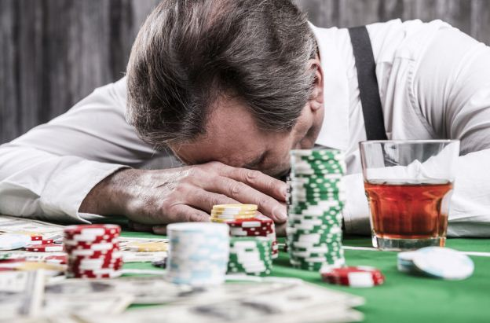

La Ludopatia

La ludopatia è la dipendenza dal gioco d'azzardo(ovvero qualsiasi gioco che ha una perdita o una vincita di denaro).
Questa patologia può condurre a perdita di lavoro, problemi economici, frode, criminalità o problemi nelle relazioni familiari.

Il gioco d'azzardo può avere forti conseguenze economiche negative per l'individuo e per coloro che lo circondano. Ma oltre a ciò, ha effetti collaterali: ansia, depressione, insonnia, abuso di sostanze, problemi digestivi, problemi cardiaci, tentativi di suicidio.
Il gioco d'azzardo patologico può anche diventare un ciclo in cui l'euforia e la depressione ricadono dopo una posta in gioco alta e perdite altrettanto elevate.

Esistono diverse opzioni di trattamento per il gioco d'azzardo patologico: supporto psicologico e colloqui di consulenza, psicoterapia individuale o di gruppo,
programmi residenziali, gruppi di auto-aiuto e, nei casi più gravi, farmaci. In Italia sono presenti anche i SerD, i servizi pubblici del sistema nazionale,
dedicati alla prevenzione, cura e riabilitazione di persone con vari problemi di dipendenza, compreso il gioco sanitario d'azzardo patologico, esite anche un numero
verde: "800 55 88 22" che garantisce un sostegno alle persone ludopatiche e alle famigli di queste persone.